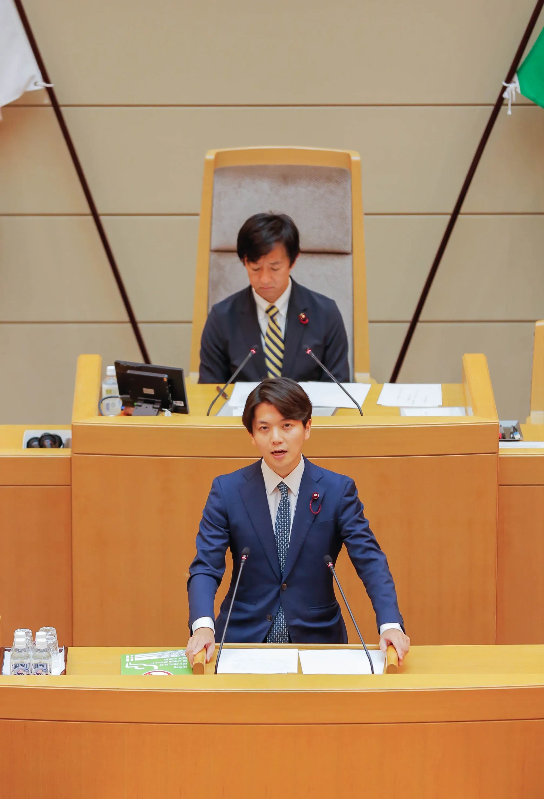
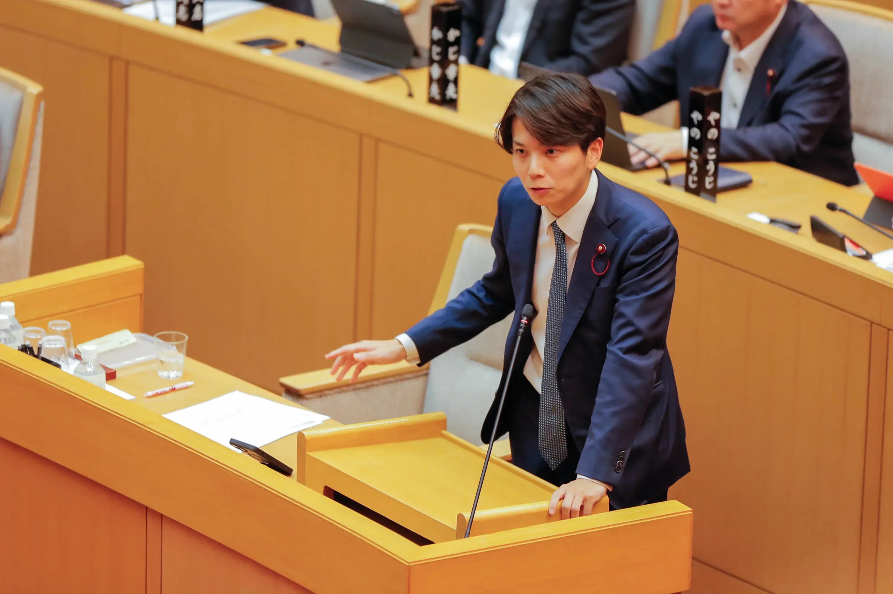

これまでのやり方が通用しない時代に
社会保障費の増大、老朽化するインフラの改修・更新費用の膨張、それに対する財源の確保。
一方で、人口減少と少子高齢化の加速によって税収は減少し、従来の仕組みが成り立たなくなりつつあります。
綺麗事はいりません。
今こそ本音の政治を！
それにもかかわらず今の政治家たちは、神戸や日本が直面する「現実」を語らず、市民にとって耳障りの良い事ばかりを口にする。
高度経済成長の時代であればそれでも良かったのですが現代においては、もはや通用しません。綺麗事を並べるだけでは、神戸や日本の未来を守れない。
「しがらみ」の無い立場から本音で語る・・・今ある資源をどう使い、どのように未来を築いていくのか？
何を守り、何を変えていくのか？を真正面から皆さんと議論したい。そして責任ある選択を行っていく・・・これが岩谷の政治姿勢です。

神戸には、未来を切り拓く力がある
神戸大空襲や阪神淡路大震災等、神戸の街は何度も苦難に見舞われましたが、その度に未曾有の復興を遂げて来ました。神戸は、未来を切り拓く力がある都市です。
人が減るなら、限られた人材を最大限活かせる仕組みを作る。
インフラが老朽化するなら、最新技術の活用やコンパクトな都市を形成し、効率化を促進する。
税収が減るのなら、広域連携と規制緩和で成長の果実を取り込んでいく。
